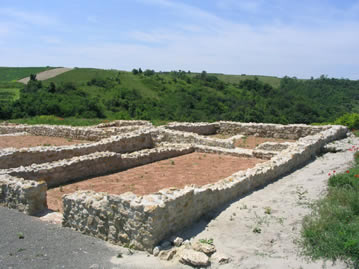

Híres városaink: PAKS
LussoniumGaléria |
Lussonium - római kori romkert
 A Kr.e. 1. sz. utolsó éveiben Augustus (Kr.e. 27-Kr. u. 14.) császár által meghódított, s később Pannonia provinciaként megszervezett terület határvédelmét az 1. század második felétől kezdve egyre nagyobb számban a Duna mentére telepített katonai táborok látták el. Ezek a táborok eleinte palánktáborok voltak, majd az 2. század második felétől kezdve kőtáborokká alakították át őket, illetve számtalan új tábort is építettek. A Duna mellett húzódó provincia határ (limes) mentén 4 legio-tábor, számtalan segédcsapat-tábor (auxiliáris) és ezek katonasága alkotta a lineáris határvédelmet. Az egyes táborok közötti összeköttetést az út mentén sűrűn elhelyezkedő őrtornyok biztosították.
Lussonium erődje Aquincumtól délre található a mai Pakshoz tartozó Dunakömlődtől kissé délebbre fekvő löszdombon, a Bottyán-sáncon. A római lelőhelyen előkerült leletek alapján valószínűsíthető, hogy a korábbi auxiliáris (segédcsapati) palánktábor már a Kr. u. 1. század derekán, Claudius császár (41-54) uralkodása idején megépült és a 2. században is használatban volt. A kőerőd É-D irányú, kiterjedése 249 m, jelenlegi szélessége 30-50 m. |